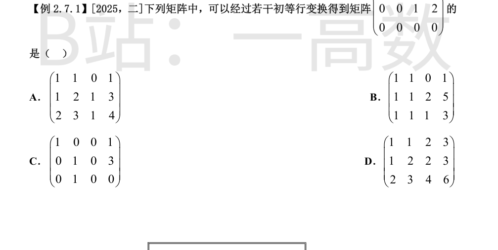
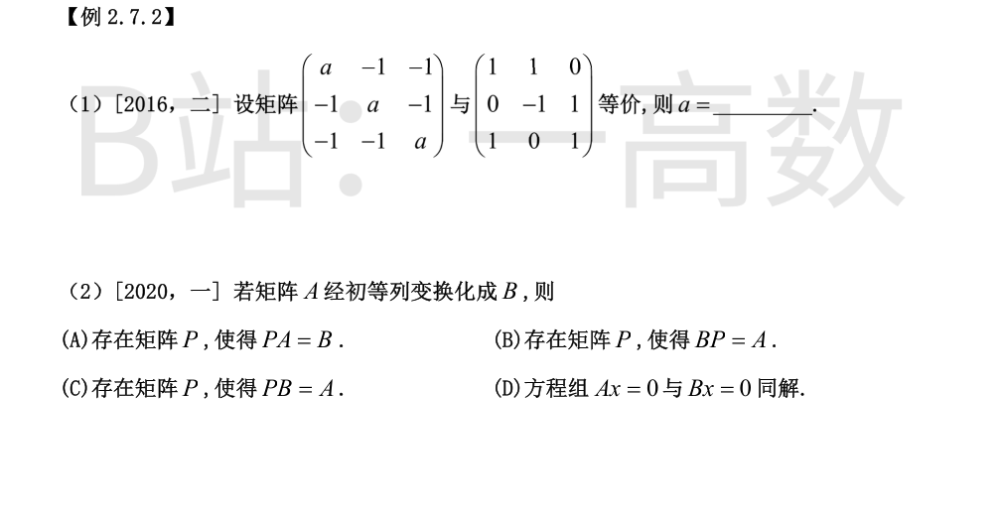
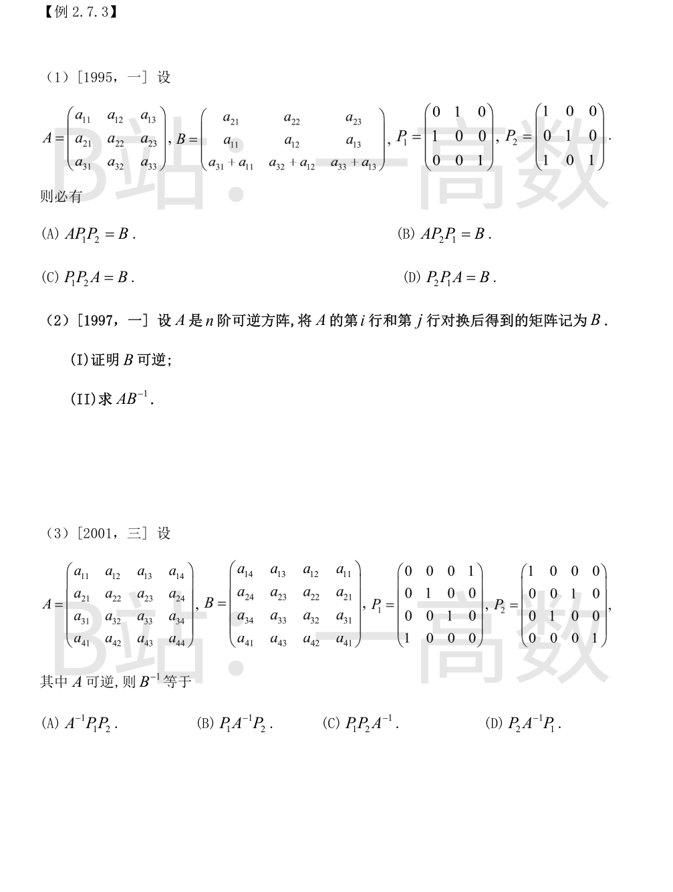
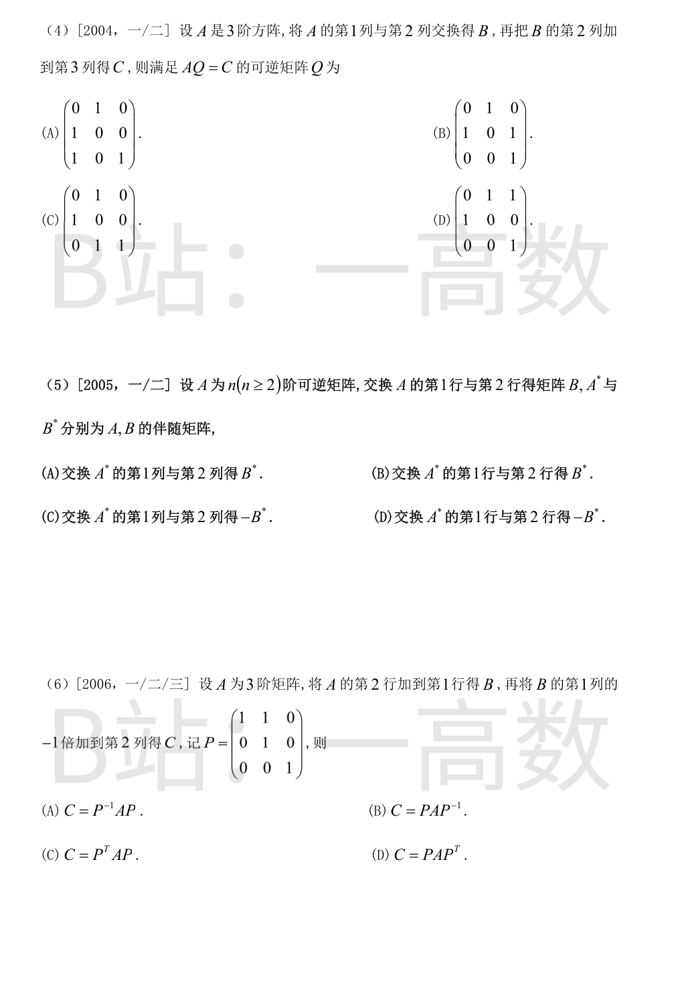

(注: 切片图上缘截去了目标矩阵首行 (1,1,0,1), 已按 2025 年数二官方真题核实补全。) 初等行变换不改变矩阵的秩与行空间, 且两矩阵行等价 ⟺ 行空间相同。目标矩阵
$$B=\begin{pmatrix}1&1&0&1\\0&0&1&2\\0&0&0&0\end{pmatrix},\qquad r(B)=2,\ \text{行空间}=\operatorname{span}\{(1,1,0,1),(0,0,1,2)\}.$$
逐项检验:
A: $r_3=r_1+r_2$, 行空间 $=\operatorname{span}\{(1,1,0,1),(0,1,1,2)\}$, $(0,0,1,2)$ 不在其中, 不同;
B: $r_2-r_1=(0,0,2,4)=2(0,0,1,2)$, $r_3-r_1=(0,0,1,2)$, 行空间恰为 $\operatorname{span}\{(1,1,0,1),(0,0,1,2)\}$, 与 B 相同;
C: 秩为 $3\ne2$;
D: $r_3=r_1+r_2$, 行空间 $=\operatorname{span}\{(1,1,2,3),(0,1,0,0)\}$, 不同。
对选项 B 显式实现: $r_2\to r_2-r_1$, $r_2\to\frac12 r_2$, $r_3\to r_3-r_1$, $r_3\to r_3-r_2$, 即得目标矩阵。故选 B。

等价 ⟺ 秩相等。先求 $r(B)$:
$$|B|=\begin{vmatrix}1&1&0\\0&-1&1\\1&0&1\end{vmatrix}=1\cdot(-1)-1\cdot(-1)+0=0,\qquad r_3=r_1+r_2,$$
而 $r_1=(1,1,0),r_2=(0,-1,1)$ 线性无关, 故 $r(B)=2$。
$$|A|=(a-2)(a+1)^2\quad(\text{A 的特征值为 } a-2,\ a+1,\ a+1).$$
$|A|=0\iff a=2$ 或 $a=-1$。$a=-1$ 时 $A$ 为全 $-1$ 矩阵, 秩为 $1\ne2$, 舍去; $a=2$ 时 $r(A)=2$。故 $a=2$。
初等列变换即右乘可逆矩阵: $B=AQ$ ($Q$ 可逆), 于是 $BQ^{-1}=A$, 取可逆矩阵 $P=Q^{-1}$ 即得 $BP=A$, (B) 正确。
(A) 左乘可逆阵表示行变换, 一般不成立; (C) $PB=PAQ=A$ 要求 $PA=AQ^{-1}$, 一般不成立;
(D) 反例: $A=\begin{pmatrix}1&0\\0&0\end{pmatrix}$, 交换两列得 $B=\begin{pmatrix}0&1\\0&0\end{pmatrix}$, 则 $Ax=0$ 给出 $x_1=0$, $Bx=0$ 给出 $x_2=0$, 解集不同, 错。故选 (B)。


左乘初等阵即行变换。从 A 出发: 先 $r_3\to r_3+r_1$ (对应左乘 $P_2$, 其第 3 行为 $(1,0,1)$), 得
$$P_2A=\begin{pmatrix}a_{11}&a_{12}&a_{13}\\a_{21}&a_{22}&a_{23}\\a_{31}+a_{11}&a_{32}+a_{12}&a_{33}+a_{13}\end{pmatrix};$$
再 $r_1\leftrightarrow r_2$ (左乘 $P_1$) 即得 B。故
$$B=P_1P_2A,$$
选 (C)。若先换行后加行, 第 3 行会变成 $a_{3j}+a_{2j}$, 与 B 不符, 故 (D) 错。
(I) 记 $E_{ij}$ 为交换单位阵第 $i,j$ 行所得初等矩阵, 则 $B=E_{ij}A$, 于是
$$|B|=|E_{ij}|\,|A|=(-1)\,|A|\ne0,$$
故 B 可逆。
(II) $E_{ij}$ 对称且 $E_{ij}^2=E$ (自逆), 于是
$$B^{-1}=A^{-1}E_{ij}^{-1}=A^{-1}E_{ij},\qquad AB^{-1}=A\cdot A^{-1}E_{ij}=E_{ij},$$
即 $AB^{-1}$ 为交换单位阵第 $i$ 行与第 $j$ 行所得初等矩阵。
右乘初等阵即列变换: $AP_1$ 交换 A 的第 1、4 列, $AP_2$ 交换第 2、3 列。B 的列恰为 A 的第 4,3,2,1 列, 故
$$B=AP_1P_2\quad(P_1,P_2\text{ 对应的列交换互不相干}),$$
$$B^{-1}=P_2^{-1}P_1^{-1}A^{-1}=P_2P_1A^{-1},$$
选 (C)。
交换第 1、2 列: 右乘 $Q_1=\begin{pmatrix}0&1&0\\1&0&0\\0&0&1\end{pmatrix}$; 第 2 列加到第 3 列: 右乘 $Q_2=\begin{pmatrix}1&0&0\\0&1&1\\0&0&1\end{pmatrix}$。
$$Q=Q_1Q_2=\begin{pmatrix}0&1&0\\1&0&0\\0&0&1\end{pmatrix}\begin{pmatrix}1&0&0\\0&1&1\\0&0&1\end{pmatrix}=\begin{pmatrix}0&1&1\\1&0&0\\0&0&1\end{pmatrix},$$
选 (D)。
设 $E_{12}$ 为交换第 1、2 行的初等阵, 则 $B=E_{12}A$。由 $(PQ)^*=Q^*P^*$ 及 $E_{12}^*=|E_{12}|\,E_{12}^{-1}=-E_{12}$:
$$B^*=(E_{12}A)^*=A^*E_{12}^*=-A^*E_{12}.$$
右乘 $E_{12}$ 表示交换 $A^*$ 的第 1、2 列, 故交换 $A^*$ 的第 1 列与第 2 列得 $-B^*$, 选 (C)。
$r_1\to r_1+r_2$ 为左乘 $P$ ($P$ 第 1 行为 $(1,1,0)$): $B=PA$;
$c_2\to c_2-c_1$ 为右乘 $P^{-1}=\begin{pmatrix}1&-1&0\\0&1&0\\0&0&1\end{pmatrix}$: $C=BP^{-1}$。
$$C=PAP^{-1},$$
选 (B)。